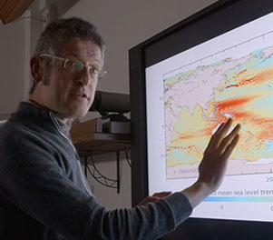

How to use this course

The ESA MOOC on Monitoring Climate From Space was first released as a
full course in 2015. This website provides the videos from the course.
The ESA Monitoring Climate From Space MOOC was first released in 2015 on the FutureLearn MOOC platform as a complete and highly innovative course which included videos, interactive exercises, tests, links and further reading. The course was run a number of times, including as a special version for the COP21 Paris climate summit, and introduced diverse new audiences to satellite Earth observation data.
This website provides all of the core videos and some text content from the course on an open and continuous basis. The videos can be streamed or downloaded. The videos alone provide a comprehensive introduction to satellite Earth observation, and we hope to add more features and information from the original course to this website in the future.
The course introduces you to the powerful role of satellite ‘Earth observation’ (EO) technology in monitoring our changing climate and environment, and to the beautiful and inspiring nature of the imagery and data it produces.
Earth observation (EO) provides an unparalleled means for observing our complex planet. It is an increasingly important tool in monitoring and making decisions about climate change and the environment, and encompasses a wide range of techniques used to map, measure, and monitor an enormous variety of environmental parameters and processes on the Earth.
Using ‘remote sensing’ methods, (i.e. using electromagnetic radiation (including visible light), emitted or reflected by the Earth), the specialised instruments on board EO satellites collect a range of types of data and imagery, at a local and global scale, as they orbit around the Earth. This data enables us to make better informed decisions, over longer timeframes, than is possible by just using other forms of environmental monitoring.
This course will provide you with an overview of the different types of data, imagery and their applications and will introduce you to the fundamental techniques and methodologies of working with this data. You will also learn about the types of satellite orbits and instruments used, and you will discover which parameters of the Earth system can be probed by ‘sensing’ in different ways.
This course focuses specifically on Earth observation from space and therefore relates to satellite remote sensing rather than similar forms of remote sensing often conducted from aircraft or sometimes ground-based sensors. Throughout the course, the terms ‘Earth observation’ and ‘remote sensing’ are often used interchangeably. Also, don’t forget that the word ‘data’ in the context of satellite EO refers to optical imagery and photography, as well as to so-called ‘geospatial’ and numerical data.
Visit the How to use this course page to learn more about how to get the most out of the course material.
This course has been produced for ESA by Imperative Space, a multi-faceted education and media company which has produced a range of online courses and training materials for clients in several global sectors, including space, environment, science, technology, NGOs and government.
Other MOOCs on Earth observation data produced by Imperative Space have included courses focusing on EO applications in ocean monitoring, land cover, humanitarian response and monitoring of the Greenland Ice Sheet.
The overseeing editors of the ESA Monitoring Climate From Space MOOC are Dr Pierre-Philippe Mathieu for ESA and Ravi Kapur for Imperative Space.
How to use this course